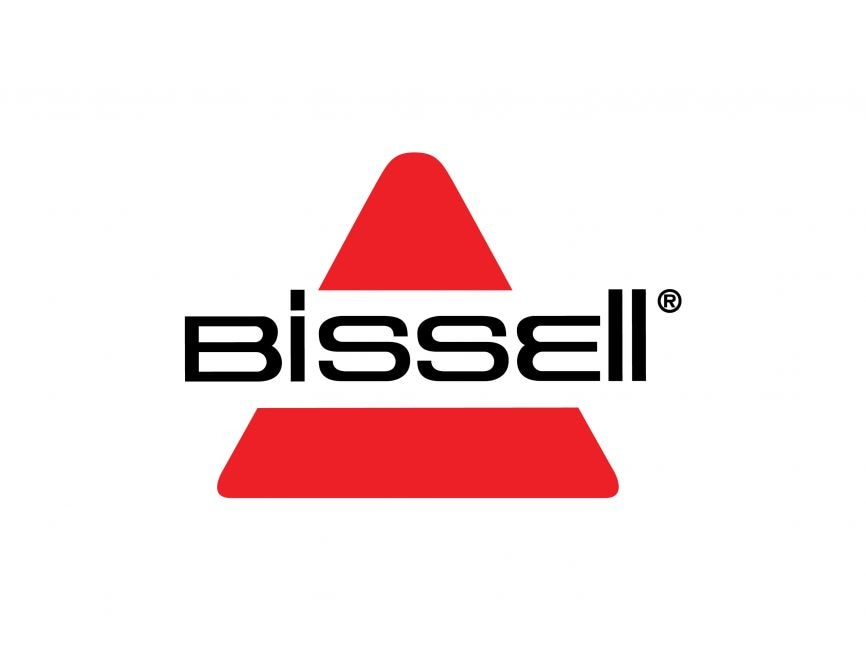
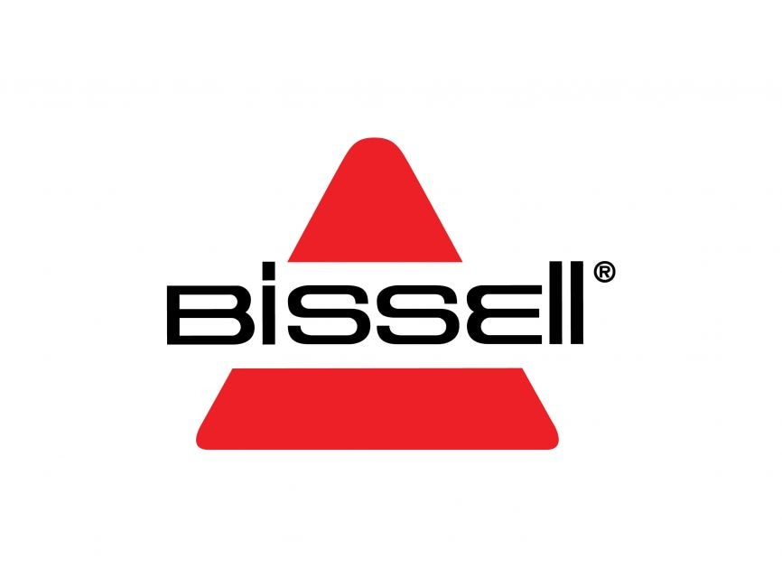

Adapt fast with
freelance finance and
accounting experts
Thousands of pros are ready to help with
invoicing, tax returns, bookkeeping, and more.

Trusted by
 


Specialized accounting and finance experts you can count on
4.87
Average rating for work with finance and accounting talent
9.7K+ contracts
Involving finance and accounting work in the past year
102 skills
Represented by talent on Upwork
Average rating for work with finance and accounting talent
9.7K+ contracts
Involving finance and accounting work in the past year
102 skills
Represented by talent on Upwork